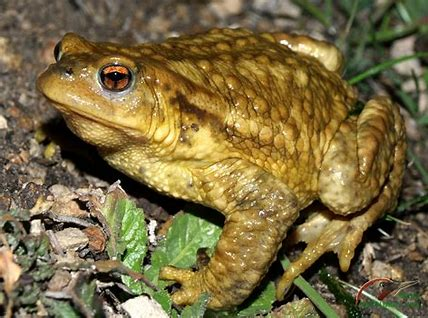
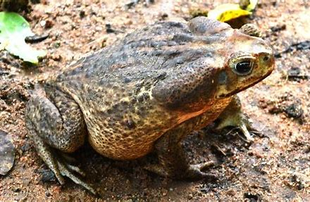

REGRESO AL MENU PRINCIPAL

El sapo común (Bufo bufo) o sapo europeo es un anfibio de gran tamaño localizado en Europa. Aunque no se encuentra en Islandia, ni
en algunas zonas del mediterráneo. Sin embargo, también es posible encontrarlo en Siberia y en el norte de África.
El sapo común es un animal vertebrado que puede llegar a medir unos 15 cm de longitud. Las hembras suelen ser más robustas que los machos y
los espécimen del sur suelen ser más grandes que los del norte. Puede llegar a vivir muchos años, en la naturaleza se cree que vive entre
10 y 12 años, mientras en cautividad han llegado a sobrevivir hasta unos 50 años. Su edad puede ser determinada contando el número de
anillos de crecimiento anuales que se encuentran en los huesos de sus falanges. El sapo común se encuentra por toda Europa, a excepción de
Islandia, las frías partes septentrionales de Escandinavia, Irlanda y varias islas del Mediterráneo (Malta, Creta, Córcega, Cerdeña y
las Islas Baleares). Se extiende hasta Irkutsk en Siberia y incluyendo zona como el noroeste de África en las cordilleras septentrionales de
Marruecos, Argelia y Túnez.
Es más activo en climas húmedos y se encuentra cerca de zonas cercanas al agua en áreas boscosas como bosques de coníferas, caducifolios
y mixtos. También es posible verlo en ciénagas y praderas.
REGRESO AL MENU PRINCIPAL
Caracteristicas
Las salamandras son pequeños anfibios con cola de diferentes colores y de nombre científico caudata, provenientes de la clase Amphibia y pertenecientes
al orden caudata capaz de adaptarse tanto a zonas acuáticas como en tierra convirtiéndose también en un animal de tierra o terrestre. Estos pequeños anfibios
durante las últimas décadas se han convertido en unos animales extraordinarios tanto para observarlos como para tenerlos de mascotas por sus pequeños esfuerzos
en cuidados y por lo bonitos que pueden llegar a ser al tener gran variedad de tonalidades de colores tan llamativas.
Los entornos más comunes dónde suelen vivir las salamandras se encuentran en el norte de América y también en la zona norte de Sur América, sobre todo por la zona
de las Montañas Apalaches pero, al ser un animal en el qué se adapta con facilidad a todo tipo de habitats se pueden encontrar también por África y en las zonas
centro y sur de Europa Les encanta estar en ecosistemas con húmedades altas por lo que son estos sitios más probable que se puedan llegar a localizar.
Las salamandras tienen una esperanza de vida de hasta 20 años en su estado natural y salvaje. Si nos referimos a estas criaturas con un hábitat en cautiverio
podrían llegar abrir a esta 50 años sin ningún problema por la abundancia de alimentos y la escasez de peligros.
REGRESO AL MENU PRINCIPAL
Caracteristicas
El tritón, un pequeño anfibio similar a las salamandras, pasa gran parte de su vida en lugares con mucha humedad.
Pertenece a la familia de los salamandridae y al orden de los urodelos.
Los tritones se encuentran en ecosistemas donde las condiciones ambientales son uniformes, donde hay tanto flora como fauna.
Eligen estar en zonas que se encuentren adyacentes a los cursos de agua, así como, en alcornoques, bosques de encinas, robles,
plantaciones de eucalipto, pinares, cultivos y zonas de matorral.
REGRESO AL MENU PRINCIPAL
Caracteristicas
El ajolote es también conocido como “el pez caminante” a pesar de que es un anfibio. Este vertebrado posee una cabeza ancha y redondos ojos sin párpados,
así como branquias, patas cortas y una cola con forma de aleta que le sirve para nadar. Incluso desarrolla pulmones.
Su distribución se limita únicamente a la zona central de la República Mexicana. Su hábitat son los lagos cercanos a la Ciudad de México y en especial, al
lago Xochimilco puesto que la mayor parte de los lagos centrales ya no existen.
En consecuencia, su distribución se ha visto considerablemente disminuida. El ajolote gusta de vivir en las profundidades de las frescas aguas y entre
la flora que ahí existe, a una temperatura que oscila rara vez superior a los 20 grados centígrados.
REGRESO AL MENU PRINCIPAL
Caracteristicas
Tiene costillas rudimentarias que se ubican a lo largo del cuerpo.
- Los ajolotes tienen 4 genes relacionados con la pigmentación de la piel.
- La coloración natural de la piel está caracterizada por un fondo oscuro, generalmente verde parduzco, con manchas en tonos olivo, amarillo, naranja o crema.
- El esqueleto no está osificado completamente. Esto puede evidenciarse en la zona branquial, que está compuesta fundamentalmente por cartílagos.
- Regeneración: Es conocido por su capacidad de regenerar extremidades, órganos e incluso parte del cerebro.
REGRESO AL MENU PRINCIPAL

El sapo gigante es una especie de anfibio ovíparo, que tiene por nombre científico Rhinella Marina, pero se le conoce por varios nombres, como
sapo de caña de azúcar o sapo marino y pertenece a la familia de los bufonidae. Este animal tiene origen en América y su área de distribución se
extiende desde el norte de México hasta la zona central del Amazonas y toda la parte sureste de Perú. Normalmente, tiene un hábitat preferiblemente
situado en ecosistemas con un ambiente semiárido y un clima tropical. En su hábitat natural la densidad de sapos gigantes que existe en es baja
si lo comparamos con los hábitats donde han sido introducidos como especie invasora
REGRESO AL MENU PRINCIPAL
Caracteristicas